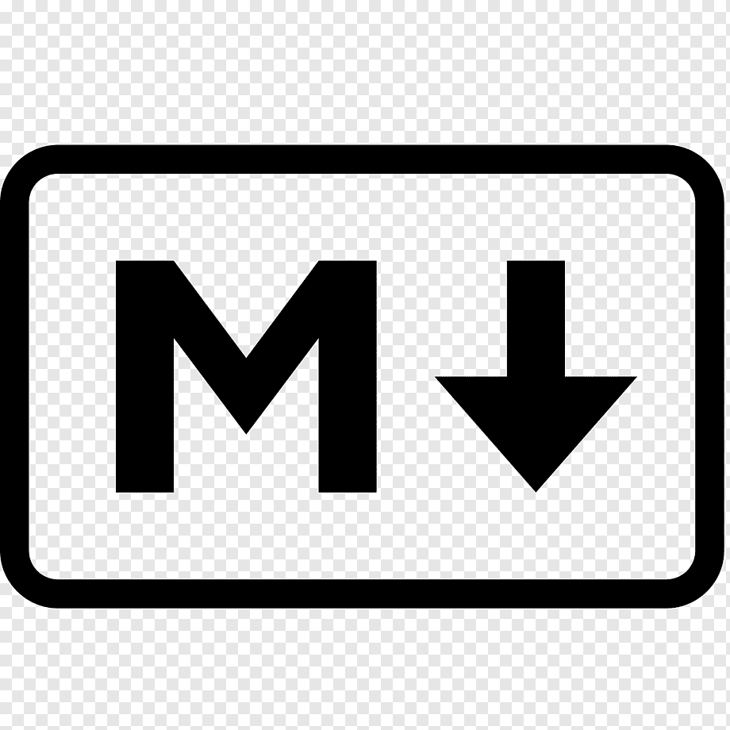

NGA LTER Programming Resources
Links to Documentation and Tutorials
A great book: The Programmer’s Brain, What every programmer needs to know about cognition, by Felienne Hermans.
Python

Python is essentially an open source programming language. But the Python ecosystem encompasses a dizzying constellation of tools, packages, disciplines, and organizations. The center is the Python Standard Library - a set of built-in functions and modules. But anyone can build extensions to that called packages.
Because of these layers, it is sometimes difficult to know how to find information on the particular object type or function that you want to use. Another difficulty is the big disconnect between basic tutorials that cover Python syntax and the modern packages that are used to actually do the work. Those packages often are so abstract that you might not need to know much syntax to do some really cool things.
It is suggested that you learn the rudiments of the language and learn to read documentation. Memorize the basic syntax to ease understanding more complicated code later. But don’t view Numpy and Matplotlib as the next step! You should jump to packages like to Pandas and Xarray as soon as you can, because they wrap most plotting and array manipulations in a much easier syntax.
Documentation
- Most recent Python Docs
- The Python Standard Library
Tutorials
Python learning resources have exploded in recent years because of its usefulness in fields like Machine Learning and Artificial Intelligence (ML/AI). All the big online education companies (Coursera, Udemy, etc.) offer Python classes. But you don’t need a whole course to get started. Here are some online tutorials oriented to scientific programming or even oceanography specifically.
- Python for Non-Programmers
- The Carpentries offers several Python tutorials
- Data Analysis and Visualization in Python for Ecologists: jumps right into pandas
- Python for Atmosphere and Ocean Scientists is a community developed lesson specifically for Ocean and Atmospheric science using Xarray
- Plotting and Programming in Python: using pandas and gapminder data
- Our Coding Club has several science related Python tutorials
- Datalab at Rutgers University has several oceanography specific tutorials prepared for REU students during the online 2020 season.
Relevant Packages
General Data Manipulation
- pandas: data analysis and manipulation tool for 1D and 2D data - like for data easily stored in CSV (comma separated values) files and tables.
- pandas docs. Pandas documentation is some of the best documentation around!
- pandas Getting started tutorials
- Xarray: N-D labeled arrays and datasets in Python - like for netCDF files and model output.
Earth Sciences
- Sci-tools: powerful Python-based open-source tools for Earth scientists. Includes:
- Cartopy is a Python package designed for geospatial data processing in order to produce maps and other geospatial data analyses.
- cf-units is a wrapper class to support Unidata/UCAR UDUNITS-2
- Iris is a powerful tool used for manipulating multi-dimensional earth science data
Specifically Oceanographic
- Gibbs Sea Water Toolbox: Python implementation of the Thermodynamic Equation of Seawater 2010 (TEOS-10)
- cmocean: Beautiful colormaps for oceanography
- A stack of GitHub repos called POceans: Python modules for oceanography
- Includes list of packages called SEA-PY: Python Tools for Oceanographic Analysis
- Another list from the SOEST, University of Hawaii: The Python scientific stack for oceanography
Additional Tools
Several types of additional tools will make your Python experience much better. First, because packages make Python so powerful, proficiency with package management (pip, conda, mamba) is essential. Second, whereas MATLAB and R have a single primary integrated development environment (IDE), Python has multiple possibilities such as Spyder, PyCharm, or VSCode; using one of these makes debugging so much easier. Lastly, you can mix Markdown and Python in Jupyter Notebooks, or even use Jupyter Lab as an IDE.
Package Management
- Standard Package Managment (pip)
- Conda Users Guide - package management using virtual environments
- Mamba Docs - like conda but much faster for virtual environments with complicated packages and dependencies.
IDEs
- Spyder the Scientific Python Development Environment written in Python and distributed as a package.
- PyCharm, “The Python IDE for Professional Developers”
- VSCode is a code editor for multiple languages that has a Python extension.
- PythonTutor is not an IDE, but can be used to visualize code operation as the debugger of an IDE would.
Jupyter Notebooks
- Jupyter Notebooks, “A computational … shareable document that combines computer code, plain language descriptions, data, rich visualizations like 3D models, charts, graphs and figures, and interactive controls.”
- JupyterLab is a “highly extensible, feature-rich notebook authoring application and editing environment”. That means you run Notebooks in Jupyter Lab.
- Google Colaboratory (Colab): write and execute Python in your browser. Not exactly Jupyter, but pretty close.
- Research Workspace, the platform that NGA LTER uses for data management, includes Jupyter Notebooks within that environment.
R

R is a programming language. You can use it more easily within RStudio, an integrated development environment (IDE). From What is R?:
Many users think of R as a statistics system. We prefer to think of it as an environment within which statistical techniques are implemented. R can be extended (easily) via packages. There are about eight packages supplied with the R distribution and many more are available through the CRAN family of Internet sites covering a very wide range of modern statistics.
- The R Project for Statistical Computing
- Openscapes’ Coding strategies for future us
- What They Forgot to Teach You About R
MATLAB

MATLAB is a product of the company Mathworks. From the MATLAB Home Page
MATLAB combines a desktop environment tuned for iterative analysis and design processes with a programming language that expresses matrix and array mathematics directly. It includes the Live Editor for creating scripts that combine code, output, and formatted text in an executable notebook.
- MATLAB tutorials and documentation are primary hosted by the company itself. For example:
- MATLAB Onramp
- Mathwork’s Help Center
- Many academic courses are also available via Googling.
- This includes Dr Seth Danielson’s UAF course
OCN F459 Computer Programming for Scientific Applications. An example syllabus from 2015 is available.
- This includes Dr Seth Danielson’s UAF course
Markdown

Markdown is inline mark-up used for converting plain text files to HTML. It was developed with the goal of making documents that are easy to write and read, independent of the final formatting. The tags are simple and limited, so it is easy to learn. Different organizations have extended the original concept, so you will probably run across different version of it.
- For short lists of tags, Google
markdown cheatsheet. For example Cheatography’s The Ultimate Markdown Cheat Sheet - John Gruber’s Markdown Syntax - the original from 2004.
- GitHub Flavored Markdown Spec - for README files and other documents rendered within a GitHub repository. It is extremely specific, but might contain tags that are not defined in other situations.
- The Quarto publishing system uses Pandoc’s Markdown - an extended and slightly revised version of John Gruber’s Markdown syntax adapted for publishing.
Fortran
Fortran is a programming language optimized for arithmetic computations performed over large numeric arrays. It is used for large-scale numerical models such as the Regional Ocean Modeling System (ROMS]. Python’s Numpy is mainly written in C and C++, but it can use pre-compiled Linear Algebra libraries (OpenBLAS or MKL) which might have been written in FORTRAN. R can also link to Fortran code.
- There are different open source and commercial Fortran compilers, so it is best to look at the documentation for the one you are using. For instance:
- Our Coding Club’s Introduction to Fortran
- fortran-lang.org’s Learn Fortran series
- IDEs (analogous to MATLAB and RStudio) are available for Fortran as well. It is highly recommended to use an IDE of some sort.